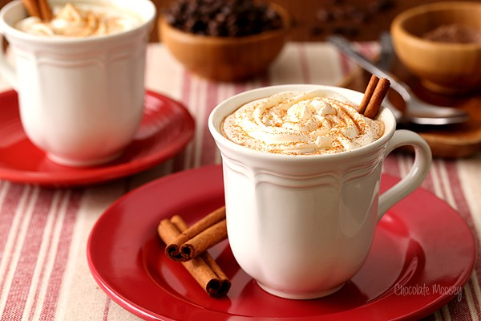

Mexican Mocha
Coffee meets hot chocolate in this Mexican Mocha recipe! The cinnamon and chili powder give your spicy coffee a nice kick to wake you up when you need it the most.

Ingredients
- 2 tablespoons powdered sugar
- 1 tablespoon unsweetened cocoa powder
- ¼ teaspoon ground cinnamon
- ¼ teaspoon chili powder
- 1 cup hot coffee
- ¼ cup half-and-half creamer
- whipped cream for topping (optional)
- cinnamon for sprinkling (optional)
Steps
- Combine powdered sugar, cocoa powder, cinnamon, and chili powder in the bottom of a mug.
- Pour hot coffee on top and stir until dissolved. Pour in half-and-half creamer and stir.
- Top with whipped cream and sprinkle with cinnamon, if desired.